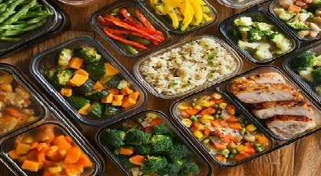

Meal Prep Tips
Meal prep saves time in the morning and makes it easier to eat healthy during the day.

Meal prep ideas
- Plan lunches for the week before shopping.
- Prepare vegetables and fruit in advance.
- Use reusable containers to keep food fresh.
- Burrito Bowls: Start with a base of rice or quinoa and add grilled chicken or beans. Include toppings like corn, salsa, avocado, and cheese to make it personalized.
- Wraps and Rolls: Use whole-grain wraps to include turkey, lettuce, tomato, and hummus. For more variety, create veggie sushi rolls using seaweed, cucumber, carrot, and avocado.
- Smoothie Packs: Pre-portion fruit and greens in freezer bags. Teens can blend them with their choice of milk or yogurt for a quick, nutritious breakfast.
- DIY Salad Jars: Layer ingredients in a jar, starting with salad dressing at the bottom, followed by hearty veggies like cucumbers and peppers, then grains or protein, and leafy greens at the top.
Teens are encouraged to experiment with these ideas, making meal prep not just a chore but an enjoyable hobby. Personalizing recipes gives teens control over their diet, teaches them cooking skills, and prepares them for greater independence. These creative meal prep ideas help keep them engaged and enthusiastic about healthy eating.